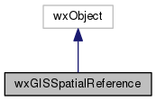

|
|
Version: 0.5.0 |


wxGISSpatialReference Class Reference
The OGRSpatialReference wrapper class. More...
#include <gdalinh.h>
Inheritance diagram for wxGISSpatialReference:

Collaboration diagram for wxGISSpatialReference:

Public Member Functions | |
| wxGISSpatialReference (OGRSpatialReference *poSRS=NULL) | |
| bool | IsOk () const |
| bool | operator== (const wxGISSpatialReference &obj) const |
| bool | operator!= (const wxGISSpatialReference &obj) const |
| operator OGRSpatialReference * () const | |
| OGRSpatialReference * | Clone (void) const |
| OGRSpatialReference * | operator-> (void) const |
| bool | IsSame (const wxGISSpatialReference &SpatialReference) const |
Protected Member Functions | |
| virtual wxObjectRefData * | CreateRefData () const |
| virtual wxObjectRefData * | CloneRefData (const wxObjectRefData *data) const |
Detailed Description
The OGRSpatialReference wrapper class.
The documentation for this class was generated from the following files:
- D:/work/projects/wxGIS/include/wxgis/datasource/gdalinh.h
- D:/work/projects/wxGIS/src/datasource/gdalinh.cpp
- Generated on Mon Oct 28 2013 04:48:00 for wxGIS by
 1.8.5
1.8.5